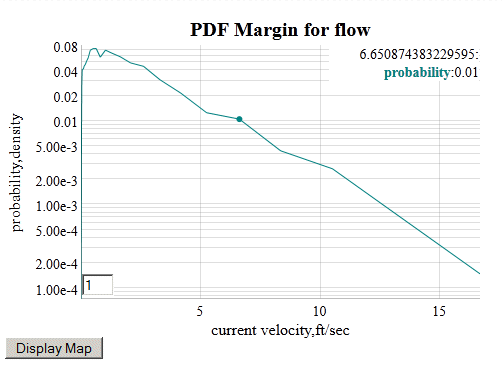
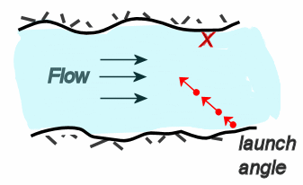

Empirical information on stream flow suitable for evaluation of vehicle fording is subject to availability of discharge rates near dam sites.
The stream flow is related to discharge rate via the cross-section of the river at the location of the measurement. Some sites have this available and will translate it directly to current or stream flow rate, yet this is not the rule.
The other factor affecting stream flow is the seasonal variation caused by local weather patterns, precipitation, and upstream run-off or flood control.
The approach taken here is to provide a pattern which can be extended to allow for parametric analysis for specific locations. The range of variability in currents and discharge rates is great enough that a predictive generic model is not possible for the current statistical information.

The analysis of launch angles has to take into account stream flow probability, width of the stream, and geometry of the banks as per the figure below.
